foo = x^2 + sin(5*y) / exp(67*z);
The semicolon at the end is optional.
sin(x),cos(x),exp(x),log(x),atan(x),cosh(x),sinh(x),mean(x),median(x),etc.
x = [1,3,9,11,-10.2];
foo = x(3); % extracts third element in the array
x(2) = 27; % reassign element in the array
x = 1:15 % creates an array with the number 1 through 15
x = 4:2:28; % creates an array starting at 4 and going up by 2 until it gets to 28
x = -1.3:0.1:1.3; %creates an array starting at -1.3 and going up by 0.1 until it gets to 1.3
x = 1:2:6; % x = [1,3,5]
x = [1:2:6]; % x = [1,3,5]
x = 0:0.1:10;
y = exp(5*x).*sin(x); % evaluate an expression on every element in the array x producing a new array called y
plot(x,y);
x = [1,2,3,4,5];
y = [7,8,9,10,11];
z = x + y; % element-wise addition adds corresponding elements
z = x.*y; % element-wise multiplication
z = x./y; % element-wise division
X = uint8(78); Y = uint8(190);
Z = X + Y;
% overflow - value will be clipped to 255
Note that numbers in scientific notation have the following components
When an array variable is created all of the numeric values in that array share the same numeric type. For example we can talk about an array of uint16s or an array of doubles.
x = single(0:0.1:100);make an array of single precision（单精度） numbers
whos
Lists all of the variables currently in your workspace and shows you their typesclear
Clears all of the variables in your workspace – you can also use this to clear specific variablesclc
Just clears the command window – has no effect on the workspacefunction f = fact(n)
f = prod(1:n);
end
function [output1,output2,output3] = myFunction(input1,input2,input3)
Must start with a letter from the alphabet
function out1 = testFunction(in1)
% A test function
% this would report, in the help function, all of functionality of the function
% in1 = function input (units: not specified)
% out2 = function output (units : not specified)
(in the command window)
lookfor 'a test function'
% testFunction - A test function
help testFunction
% A test
% this would report, in the help function, all of functionality of the function
% in1 = function input (units: not specified)
% out2 = function output (units : not specified)
userpath('C:\ATRI')
addpath() functionrmpath() functionfunction_name = @ (arguments) expression
FtoC = @ (F) 5*(F-32)./9
% examples
FA = @ (x) exp(x^2)/sqrt(x^2+5)
FA(2)
FA = @ (x) exp(x.^2)./sqrt(x.^2+5)
FA([1 0.5 2])
f = @sin;
m = fminbnd(f,0,2*pi)
q = integral(@cubicPoly,0,1);
% Linspace and logspace
x = linspace(1,5,5)
x = logspace(1,5,5)
x = [5, 9, 4, 1, 7, 3, 4, 8]
% Accessing vector elements
y = x(1)
y = x(1:3)
y = x(end)
y = x(end-2)
y = x([1,3,6]) % y = [5,4,3]
% The indices start at 1, not 0.
% Overwriting
x(end) = 1;
%Add ending indices
x(end+1) = 8
x(end+1:end+2) = [6,9]
%Removing elements
x(1) = []; % Remove the first element
x(end-3,end) = [];
for jj = 1:20
disp(jj)
end
a = 1;
while a < 10
a = a + 1;
end
% Iterate through the array
x = [1,2,3]
for element = x
disp(element);
end
if statementa = 1;
b = 2;
if a == 1;
disp('a is equal to 1! Yeah');
end
elseif a == 1 && b == 2;
disp('...')
end
| Logical Operator(Scalars) | Logical Operator(Vectors) | Function Call |
|---|---|---|
| && | & | and(a,b) |
| || | | | or(a,b) |
| ~ | ~ | not(a) |
| none | none | xor(a,b) |
Attention: ~= in matlab equals to != in other languages
a = [1 6 5] < 2
% a = [1,0,0]
x = [5 9 2 4 3];
v = logical([1 0 1 0 1]);
xp = x(v);
% xp = [5,2,3]
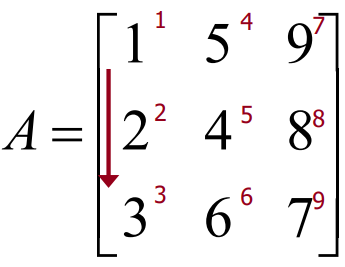
A = [1 2 3;4 5 6];
A = ones(2,5);
A = zeros(2,3);
A = eye(3); % Create a identity matrix
B = A' % Rows become columns and columns become rows.
% Expressions used to initialize arrays can include algebraic operations and (all or portions of) previously defined arrays
a = [0 13*2];
b = [a(2) 13 a];
A = [1 5 9;2 4 8;3 6 7];
c = A[3,1]; % c == 3
c = A[4]; % Matrix indices may also be accessed using a single subscript
% Vectors
va =[1:5]
va(:) % all elements
va(m:n) % elements m through n
% Matrix
A = [1 2 3; 4 5 6; 7 8 9];
A(:,n) % all elements in column n
A(n,:) % all elements in row n
A(:,m:n) % elements in columns m through n
A(m:n,:) % elements in rows m through n
A(m:n,p:q)
b = [1 2 3 4; 5 6 7 8; 9 10 11 12];
b(2:2:end,2:end); % [6 7 8]
| Built-in function | description |
|---|---|
length(v) |
returns length of largest array dimension |
size(A) |
returns[m,n] where m and n are the size of A |
numel(A) |
returns the total number of elements in the array |
reshape(A,m,n) |
rearrange A to have m rows and n colomns |
diag(v) |
creates square matrix with elements on the diagonal |
diag(A) |
creates vector from the diagonal elements |
A(:,2) = []; % deleting rows or columns from an array
A = [B C; D E;] % Arrays can be concatenated to form larger arrays.
'Hello World'My_string = char('string 1','string 2','string 3')lower;isspace;islettersin, log,…)a*B Matrices may be multiplied by a scalar:Element-by-Element MultiplicationA.*B Element-by-Element MultiplicationA*B Matrix multiplicationcross(X,Y) Cross product, special operation on two vectors.inv function or raise to -1 powerSolve $AX=B$ where $X$ and $B$ are column vectors.
$$X=A^{-1}B$$
X=A\B
Solve $XC=D$ where $X$ and $D$ are column vectors.
$$X=DC^{-1}$$
X=D/C
rot90:Rotate counterclockwise by 90 degreesfliplr or flipdim(A,1): Reverse the matrix by treating a row as a whole.flipud or flipdim(A,2): Reverse the matrix by treating a column as a whole.
$$A= \left[ \begin{matrix}
1&2&3\
4&5&6
\end{matrix} \right]
\begin{cases}
\xrightarrow{rot90(A)}\left[ \begin{matrix}
3&6\
2&5\
1&4
\end{matrix} \right] \
\
\xrightarrow{fliplr(A)\ or flipdim(A,1)}\left[ \begin{matrix}
3&2&1\
6&5&4
\end{matrix} \right]\
\
\xrightarrow{flipud(A)\ or flipdim(A,2)}
\left[ \begin{matrix}
4&5&6\
1&2&3
\end{matrix} \right]
\end{cases}$$
Actually, we use flip instead of flipdim now. And the grammer is absolutely the same.flip(or flipdim) is the dimension that is manipulated. It can be set to 3 or more when the dimension of array is above 2.zeros(n) returns an n-by-n matrix with all the elements equal to zeroones(n) returns an n-by-n matrix with all the elements equal to onemagic(n) returns an n-by-n matrix constructed from the integers 1 through n*n with equal row and column sums. The order n must be a scalar greater than or equal to 3 in order to create a valid magic square.eye(n) return an n-by-n identity matrixSparse matrices are defined by a list of elements containing non-zero elements while all other elements are assumed to be zero
% conventional way to create a matrix
A = zeros(1000,2000);
A(3,4) = 15;
A(100,1500) = 5;
A(1000,2000) = 9;
% create using a sparse matrix
A = sparse([3,100,1000],...
[4,1500,2000],...
[15,5,9],1000,2000);
%The original (full) matrix A could also be converted to a sparse matrix via the following
A = sparse(A);
| Matrix type | Memory(MB) | Time to compute $A^2$(ms) |
|---|---|---|
| Full | 15.2 | 4 |
| Sparse | 0.015 | 0.04 |
Consider the following 3D array $$A=\left[\begin{matrix} 1&1&1\ 1&1&1 \end{matrix}\right] \left[\begin{matrix} 2&2&2\ 2&2&2 \end{matrix}\right] \left[\begin{matrix} 3&3&3\ 3&3&3 \end{matrix}\right]$$ $$sum(A)=\left[\begin{matrix} 2&2&2 \end{matrix}\right]\left[\begin{matrix} 4&4&4 \end{matrix}\right]\left[\begin{matrix} 6&6&6 \end{matrix}\right]$$ $$sum(sum(A))=[6][12][18]$$ $$sum(sum(sum(A)))=[36]$$ $$sum(A,3)=\left[\begin{matrix} 6&6&6\ 6&6&6 \end{matrix}\right]$$ manipulate the matrix in the same way:
cumsum() sums cumulatively along a vector or some dimension of an arraycumsum([1 2 3 4 5]);
% [1 3 6 10 15]
cumsum([1 2 3; 4 5 6]);
% ([1 2 3; 5 7 9])
x(:,:,1) = [1 2 3; 4 5 6];
x(:,:,2) = [6 5 4; 3 2 1];
y = prod(x)
% y(:,:,1) == [4 10 18] and
% y(:,:,2) == [18 10 4]
cumprod() calculates the cumulative product of array elements along the first non-singleton dimension
x(:,:,1) = [1; 2; 3];
x(:,:,2) = [2; 2; 2];
y = cumprod(x)
% y(:,:,1) = [1; 2; 6] and
% y(:,:,2) = [2; 4; 8]
input commandin1 = input('Enter data:');
% Stores input value as a numerical value or array of values of type double
in2 = input('Enter data:','s');
% Stores input value as a string (an array of characters)
disp commanddisp(variable);
disp('text to print')
fprintf commandfprintf(format,data);
Formatted output placed on screen or saved to a file
save% Save all variables in the workspace to a file
save('file_name');
save file_name;
% Writes file_name.mat file in binary format
% Save a few variables
save file_name var1 var2;
% Save in readable format
save -ascii file_name;
% Easy way to transfer data
load% Load the variables in a file
load('file_name');
load file_name;
% Reads file_name.mat in binary format and restores variables
load file_name var1 var2;
% Load a few variables
load file_name var1 var2;
% Load from a text(.txt) file
load file_name.txt;
var = load('file_name.txt');
% Options
% mat, -ascii
c = {42,rand(5),'abcd'}
% c =
% 1x3 cell array
% {[42]} {5x5 double} {['abcd']}
several objective measures of a good plot
plot and scatterx = -2*pi:pi/20:2*pi;
y = sin(x);
| commands | plot() |
scatter() |
|---|---|---|
| picture | 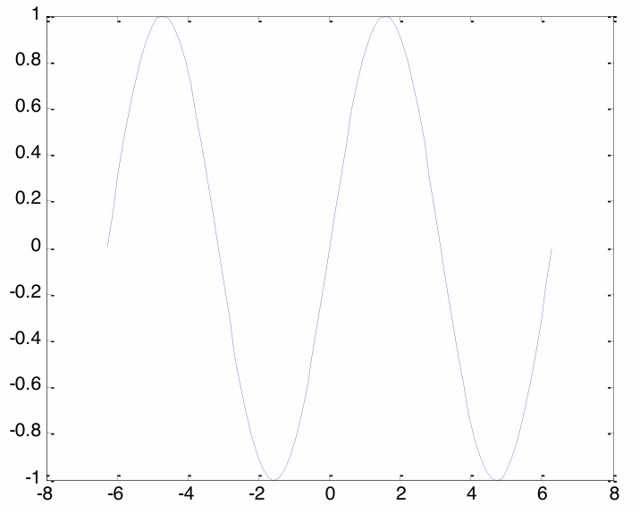 | 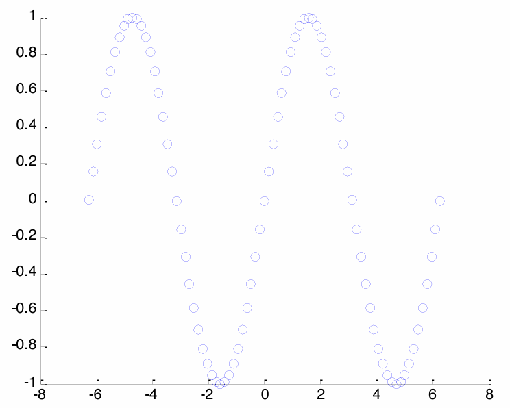 |
p;ot() and scatter require vectors of equal lengthlinespecplot([0,20],[-5,5],'r-');
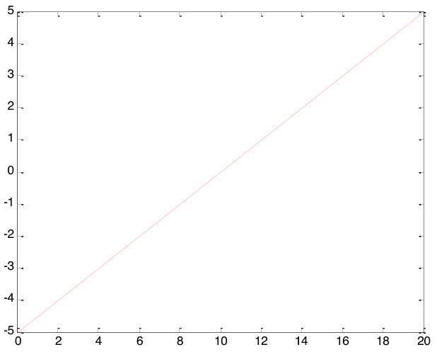
plotyy()x = -2*pi:pi/20:2*pi;
y1 = sin(x);
y2 = cos(x);
plotyy(x,y1,x,y2);

x = logspace(0,5,25);
y = x.^5;
loglog(x,y,'LineWidth',4)
| commands | semilogy() |
semilogx() |
loglog() |
|---|---|---|---|
| picture |  |
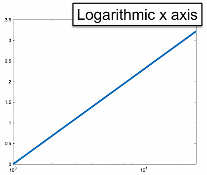 |  |
polar() and Error Barstheta = 0:0.01:2*pi;
rho = sin(2*theta).*cos(2*theta);
polar(theta,rho)
x = 1:25; y = randi(25,1,length(x));
y_err = 0.25*y;
errorbar(x,y,y_err)
| commands | polar() |
errorbar() |
|---|---|---|
| picture | 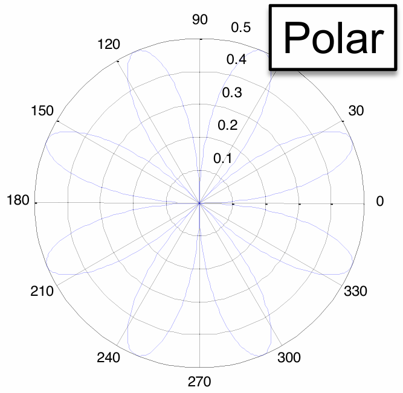 |  |
ezplotezplot produces simple plots without the need for discrete input of x/y vectors
| commands | ezploy('1/x') |
ezplot('1/x',[0 2*pi]) |
|---|---|---|
| picture | 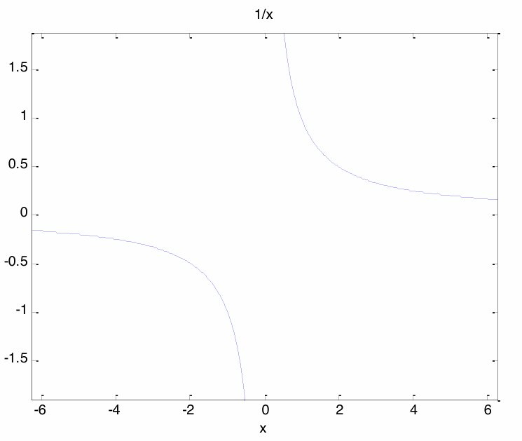 |  |
| discription | The default domain is -2π to 2π | The domain may also be specified by a two element vector |
fplotfplot intelligently selects x values based on changes to a function and may be used for rapidly changing functions
x = 0:.05:0.5*pi;
y = sin(1./x);
plot(x,y)
fplot('sin(1/x)',[0 0.5*pi]);
| commands | plot() |
fplot() |
|---|---|---|
| picture |  |
 |
Most 2D plot commands can be called with a single vector, which is often useful for debugging
The x values are then assigned the index location
r = logspace(0,3,25)
plot(r,'ko','MarkerFaceColor','k')

plot(x,y,'LineSpecifiers','PropertyName',PropertyValue)
Line specifiers include line style, line color and marker.(e.g. ro-)
Property names include LineWidth, MarkerSize, MarkerEdgeColor, MarkerFaceColor
x = -2*pi:pi/20:2*pi;
y1 = sin(x);
y2 = cos(x)
% first method
plot(x,y1,'r-',x,y2,'b-','LineWidth',5)
% second method
plot(x,y1,'r-','LineWidth',5)
hold on
plot(x,y2,'b-','LineWidth',5)
hold off

LineWidth invoked within the plot function will be applied to all data serieshold on is invoked after the first plot command and indicates that more data will be attributed to the existing axes;hold off indicates that additional plotting will overwrite the axesset(gca,'Fontsize',20)
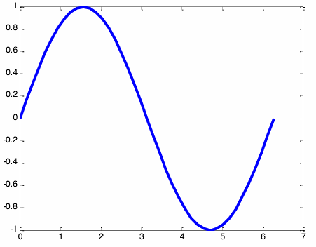

set(gcf,'Color','w')
 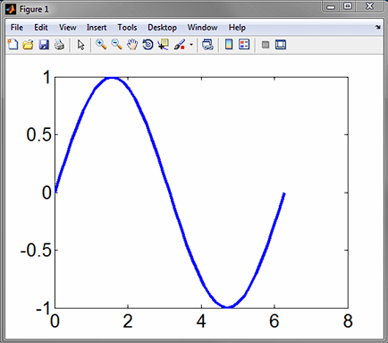
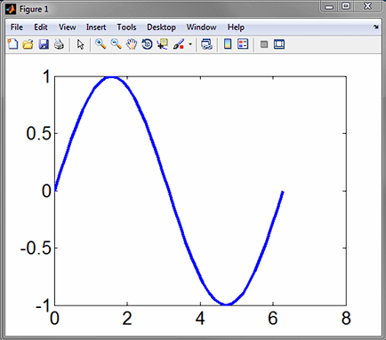
The second plot command executed (without specifying hold on) will overwrite the first plot.
You need to specify a new figure establish a new parent figure window
x = -2*pi:pi/20:2*pi;
y1 = sin(x);
y2 = cos(x);
plot(x,y1,'k-','LineWidth',5)
figure
plot(x,y2,'k-','LineWidth',5)
Figures numbers may also be specified with a figure number, ex. figure(3)
Plots may then be closed using the close command
close: closes the last figure
close(n): closes figure number n
close all: closes all figures
Multiple axes may be assigned to a single figure using the subplot command or by specifying the position of multiple axes
subplot(rows,columns,position)
x = 0:pi/20:2*pi;
y1 = sin(x-0);
y2 = sin(x-0.5);
y3 = sin(x-1);
y4 = sin(x-1.5);
y5 = sin(x-2);
y6 = sin(x-2.5);
subplot(2,3,1)
plot(x,y1)
axis tight
subplot(2,3,2)
plot(x,y2)
axis tight
subplot(2,3,3)
plot(x,y3)
axis tight
subplot(2,3,4)
plot(x,y4)
axis tight
subplot(2,3,5)
plot(x,y5)
axis tight
subplot(2,3,6)
plot(x,y6)
axis tight
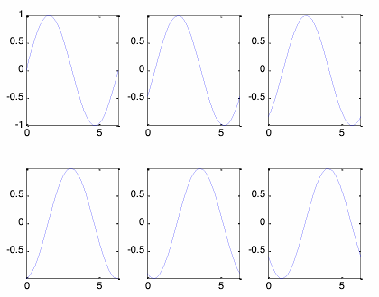
axes('Position',[x,y,w,h])
axes('Position',[.1 .1 .5 .3])
plot(x,y1)
axes('Position',[.5 .5 .2 .4])
plot(x,y3)

A specific domain and range may be specified using axis or xlim/ylim
axis([xmin xmax ymin ymax]) or
xlim([xmin xmax])
ylim([ymin ymax])
e.g.
plot(x,y1,'LineWidth',5)
axis([0 1.5*pi 0 1.5])
set(gca,'FontSize',20)
The axis command offers many predefined axis scaling/sizing operations.

plot(x,y1,'LineWidth',5)
set(gca,'FontSize',20)
xlabel('Time (s)')
ylabel('Voltage (V)')
title('Generator Output')
axis([0 2*pi -1.2 1.2])

legend('sin(x)','cos(x)','Location','NorthEast')

text(pi,0.2,'Text string','Color','b')
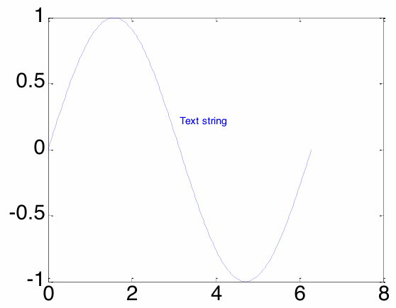
Three steps
plot3(x, y, z, 'line specifiers','PropertyName', PropertyValue)
[X, Y] = meshgrid (x, y)
x = linspace(-1, 3);
y = linspace(4, 1, -1);
[X, Y] = meshgrid(x, y);

mesh(X,Y,Z) lines connecting the pointssurf(X,Y,Z) areas coloredview(az, el) or view([az, el])
az: azimuth relative to negative y-axis (default is -37.5°)
el: elevation from x-y plane (default is 30°)

Figures, axes, and plots can all be assigned handles
These handles look a lot like “variables” and serve as a pointer to the object
myHandle1 = plot(x,y);
myFig = figure;
h = axes;
setset(<handle>,<property>,<propertyValue>)
e.g.
pl1 = plot(x,y);
set(pl1,'LineWidth',2)
getget(<handle>,<property>)
e.g.
fig1 = figure
pl1 = plot(x,y);
get(fig1,‘Position')